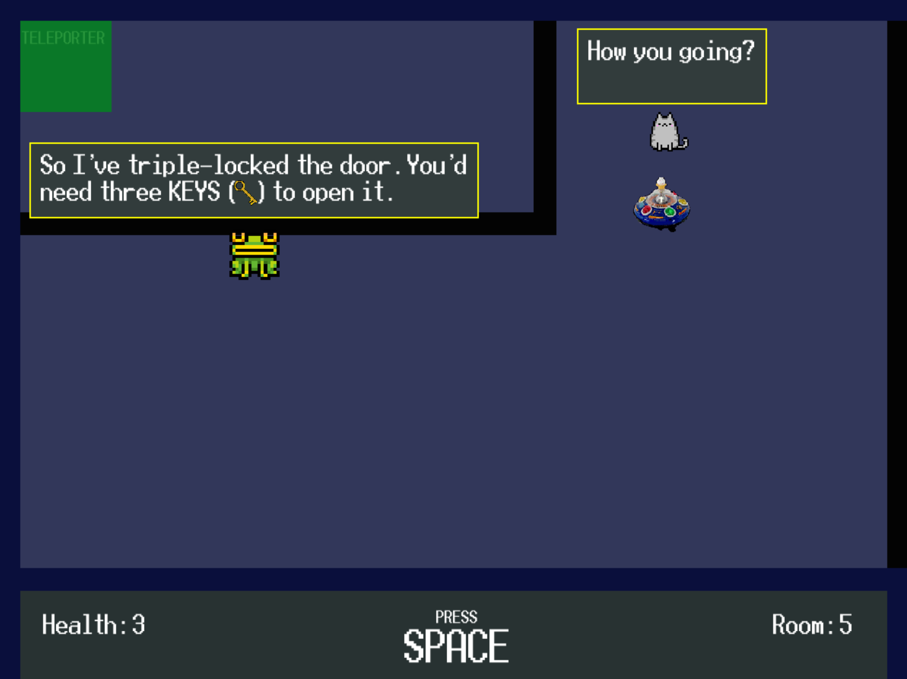
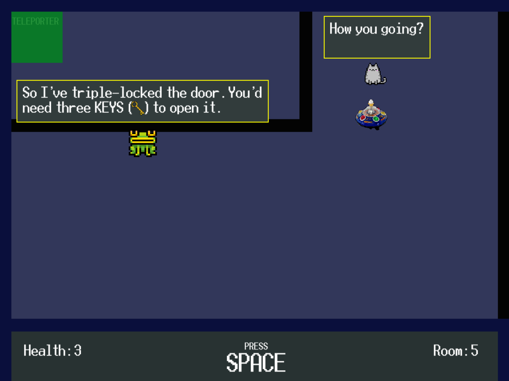

SHOWREEL
Smoketrail
[ PLAY IN BROWSER ]Puzzle game which challenges players to guide particles into designated areas to progress, developed in Unity over 72 hours for Mini Jam 179.


The theme for this Mini Jam was "Creation Through Destruction." My initial idea involved objects burning and emitting different smoke trails, which players would sculpt into specific shapes by strategically placing wind currents. As it turned out, a significant portion of development time was spent learning Unity’s ParticleSystem, and consequently ParticleSystemForceField -although this was far more valuable for expanding my skill set than just implementing familiar mechanics. Due to this, and drawing from past jam experience, I made a conscious effort to scale back the project’s scope to get a playable and polished result that demonstrated the underlying concept well.

The final game features eight levels, built around a single smoke trail controlled by one ParticleSystemForceField that follows the cursor. Players can adjust its gravity using mouse buttons to attract or repel particles as needed.
I was proud of the concept and pleased with how it came together. Playtesting proved invaluable -I repeatedly adjusted level order and difficulty to ensure new players could learn mechanics intuitively without solving puzzles by accident. This experience reinforced the importance of user experience, something I need to prioritize more from the outset in future projects. The game ultimately placed 18th for Concept out of 83 entries.
[ GAME PAGE ]
AUTORHYTHM
[ DOWNLOAD HERE ]Made for my dissertation, AutoRhythm is a simple note-playing rhythm game in the style of DDR or Guitar Hero, in which the user can supply any song and have a level generated for it which they can then play.

The game itself was made in Unity, with accompanying Python code to deal with level generation. The user supplies an MP3 to the relevant folder, and a level can be generated, played, and saved for future use.
- Options to control level generation (difficulty, style, etc.)
- Easy rebinding with support for most HIDs and MIDI instruments
- Customizable number of note streams (1-6 input buttons)
- Level editor to tweak scores as needed


This project exceeded my expectations and often generates well-structured levels for songs not featured in any existing rhythm games.
The generation process works by analysing the MP3 file for "note onsets" -the starting points of notes within the track. Each onset is assigned a strength value which indicates the likelihood of a significant change in the audio signal, which is useful as it also essentially indicates how ‘obvious’ the note is. After experimenting with both quantization and ignoring weak onsets to filter out irregular notes, I implemented a system that calculates the mean and standard deviation of onset strengths within a given window around each onset. The game can then selectively include onsets based on their relative strength, filtering out comparatively weak notes in favour of strong, obvious ones, while also allowing weak notes to exist in sections of the track with no strong onsets.
This was a huge and satisfying development milestone. Suddenly, levels felt like they properly matched the songs, with minimal unwanted or random notes. While the project absolutely prioritizes functionality over visuals, it’s a good proof of concept and can work well as a tool in conjunction with rhythm game emulators that accept user-made scores. Countless areas for improvement but I think it's a fun and promising prototype, and I’ve learned a lot from it.
[ GAME PAGE ] --- [ PROJECT WRITEUP ]
Caption Quest
[ DOWNLOAD HERE ]A short top-down puzzle game made in 24 hours as a solo dev using PyGame for the University of Bristol GameJam.
 

The theme was 'It's not a bug, it's a feature!', and my 'bug' was the player character not having their movement restricted when talking to NPCs. This, for example, lets them walk over textboxes, grab keys out of them, and start multiple conversations at once. It was awarded the prize for 'Most Innovative Game' out of around 30 teams of 1-6 people.
Carpetman Listener
[ DOWNLOAD HERE ]Building off of Caption Quest, this is a longer puzzle game following the same concept, made in PyGame and submitted to the Mental Health Game Dev Champions Jam on itch.io.

I designed 24 levels with some new features, such as textboxes with non-walkable borders, beam-activated switches, and eventually the ability to talk yourself. Many levels focus on playing around with the core mechanics in different ways.


I'm proud of the work I put into this game, it was nice to build something from the ground up, refine my level design skills and have time to write significantly cleaner code than in Caption Quest. The design approach focused on pushing core concepts to their limits, and ultimately this led to a few quite confusing yet similar puzzles. I’ve learned that balancing complexity with accessibility is key to maintaining engagement. In hindsight, taking the design approach the other way with a faster introduction of new mechanics and simpler puzzles—something Caption Quest did well—could have enhanced the overall player experience. This project has been a great lesson in striking that balance, and I’m excited to apply these insights to future designs.
Wizard Pool
[ DOWNLOAD HERE ]A 2-player pool simulator made in Processing (a Java-style IDE + graphics library). Each turn, players can select a spell to cast, such as "moving pockets," "fog cloud," or "create portals."

A silly little project I occasionally update with new spells. It's fun to have somewhere to throw ridiculous, unbalanced ideas and to watch your friends scream at each other over them :)